Production https://app.dynamicsroute.tech · staging
https://dev.dynamicsroute.tech
Related documents
System & Architecture Design (SDD); API Technical Specifications (TDD/LLD)
package; Request/Response package with endpoint inventory and live captures
Submitting entity
[ LEGAL NAME OF COMPANY / LICENCEE ]
Contact person
[ NAME, TITLE, EMAIL, TELEPHONE ]
Date of submission
[ DD MONTH YYYY ]
Status of this document
This specification describes the API as implemented in the deployed
service. Every requirement listed here is present in the running system; no
forward-looking features are specified. Fields shown in
amber are administrative placeholders that the
submitting entity completes before submission.
Contents
1
Introduction
2
Overall description
3
Functional requirements
4
External interface requirements
5
Data requirements
6
Non-functional requirements
7
Business rules and journey state model
8
Requirements traceability
A
Appendix A — glossary of acronyms
How to read this document
§3 contains the numbered functional requirements (prefix FR-), grouped by
subsystem, each with a priority. §4 specifies every external interface of the system
(REST, WebSocket, files, third-party services). §6 contains non-functional requirements
(NFR-). §7 defines the journey state model that most functional
requirements refer to, and §8 traces each requirement group to its design section in
the companion SDD and to its verification evidence. Requirement identifiers are stable
so a reviewer can follow a requirement from this document to its design element and to
its implementation.
Verification baseline
All counts in this document were extracted from the source and validated against a
running instance of the API: 204 distinct routes / 285 operations
(probe-verified, only non-404 routes counted), 103 MySQL tables,
20 journey statuses, 12 user roles,
78 typed real-time message kinds. The full route table ships in the
Request/Response package (endpoints.md).
1. Introduction
1.1 Purpose
This document specifies the requirements for the Transport Management System
Backend API (the “system”), the server-side component of a freight/transport
management platform. It is the API Requirements Documentation (SRS) for the asset
transport version 1.0.0 submitted for asset registration, and it is
written for external review as well as for the project's own development and test
baseline.
1.2 Scope
The system provides the complete server-side functionality of the platform:
Identity: registration, contact verification by one-time password (OTP),
authentication (JWT) and role-based authorization for 12 platform roles.
Transport demand: shipper requests with a 20-state journey lifecycle, driver
bidding, company-target batch dispatch, assignment and replacement workflows.
Journey execution: loading stages, GPS route tracking, proof of delivery and
delivery confirmation with photo evidence.
Supply: company registration and approval, memberships and roles, fleet and
driver–vehicle assignment, a FIFO dispatch queue for queue organizations.
Real-time features: location exchange between driver and shipper, queue boards,
typed in-app notifications over Socket.IO.
Finance: deposits completed by payment-gateway webhook, balances, commissions,
refunds and tariff rates.
Supporting functions: document/media management, SMS/e-mail/FCM notifications,
ratings, delinquency governance, subscriptions, administration and health
endpoints.
Out of scope: the web and mobile client applications (separate systems that consume
this API) and the external payment, SMS, e-mail and push providers themselves. All
business records of account — journey state, permissions, financial entries — are held
by this system; clients hold no business logic of record.
1.3 Definitions and acronyms
Term
Meaning
Shipper
Cargo owner who posts transport requests (role 1).
Driver
Person who receives or bids on transport requests (role 2).
Company
Transport company bidding on batched orders; operates fleet and staff (roles 7/8/10).
Journey
Execution record of one accepted transport, from loading through delivery to proof of delivery.
Journey status
One of 20 states (journeyStatusId 1–20) that every request moves through; defined in §7.
Request mode
individual (offer to single drivers) or company_target (companies bid on a batch).
Batch
A multi-vehicle order (ShipperRequestBatch) split into vehicle slots, each a request with its own status.
Decision
Immutable server-side record of a status move by an actor (JourneyDecisions).
POD
Proof of delivery: receiver identity, photos and confirmation captured at drop-off.
API System & Architecture Design Document (SDD) — companion document of this package.
API Technical Specifications (TDD/LLD) package — conventions, data model, status machine, socket protocol.
Request/Response package — six live request/response captures (redacted).
2. Overall description
2.1 Product perspective
The system is a self-contained backend service executed under PM2 behind an Nginx TLS
terminator. It persists data in MySQL (103 tables), uses Redis for caching and for
scaling Socket.IO across nodes, and integrates outboundly with SMS, e-mail, push and
payment services. It is the single authority for all business state of the platform:
clients render, the server decides.

Figure 2.1 — Level 0 context: clients, platform, infrastructure and external
services with numbered data flows
2.2 User classes and actors
Actor
Role id
Primary capabilities through the API
Shipper
1
Create/cancel transport requests, select bids, confirm delivery, manage documents, deposits.
Delivers signed webhooks for deposit completion (public endpoint).
Monitoring system
—
Polls health endpoints (public).
2.3 Operating environment
Runtime: Node.js ≥ 20, Express 5, PM2 process manager, Linux server (production).
Data stores: MySQL 8 (primary), Redis/Upstash over TLS (cache + Socket.IO adapter).
Clients: browser SPA and React Native mobile app over HTTPS and WSS.
Environments: production (app.dynamicsroute.tech), staging
(dev.dynamicsroute.tech), local development.
2.4 Constraints
All traffic over TLS; JSON bodies (1 MB limit), multipart only for uploads.
JWT lifetime fixed at 24 hours; no refresh-token endpoint in v1.0.0.
Personal data (names, phones, e-mail, GPS traces) processed under access control;
production error responses must never expose stack traces.
Status transitions and financial postings must be transactional and audited.
2.5 Assumptions and dependencies
Clients enforce UI validation; the server remains the authority for all rules.
SMS/e-mail delivery is provided by configured providers; outside production the
test OTP 101010 is used.
MySQL, Redis, SMTP, SMS, FCM and the payment gateway are external availability
dependencies; the design degrades gracefully (see NFR-04).
3. Functional requirements
Priority: M = must (release-blocking), H = high.
All requirements below are implemented in version 1.0.0; identifiers are stable and
referenced by the SDD (§12 traceability) and by the automated test suites.
3.1 Identity and access — FR-01
ID
Requirement
Pri
FR-01.1
The system shall allow self-registration with name, phone, e-mail and password, creating the user, credential and role-mapping records. POST /api/user/createUser
M
FR-01.2
The system shall verify e-mail and phone ownership via OTP delivered by e-mail/SMS, with resend and “wrong e-mail” reporting. /api/user/verify-email, /api/user/verify-phone, /api/user/report-wrong-email
M
FR-01.3
The system shall authenticate by password hash and complete login with a second-factor OTP, issuing a signed JWT of 24 hours. POST /api/user/loginUser, POST /api/user/verifyUserByOTP
M
FR-01.4
The system shall reject calls to protected endpoints without a valid bearer token with 401. Exactly 17 of 285 operations are public (listed in §4.1).
M
FR-01.5
The system shall authorize actions by role (12 roles), by ownership and by company scope, denying with 401/403.
M
FR-01.6
The system shall support logout and forced logout on phone change (typed notification force_logout_phone_change). POST /api/user/logout
M
FR-01.7
The system shall track per-role account status (active/suspended) with full history, so a suspension takes effect without deleting the user.
H
3.2 Shipper requests — FR-02
ID
Requirement
Pri
FR-02.1
The system shall let a shipper create a transport request: origin/destination with coordinates, item name, quantity in quintal, shipping/delivery dates, individual or company-target mode, POD requirement.
M
FR-02.2
The system shall list a shipper's requests with pagination and sorting, defaulting to connected-first order (rows with a connected driver first), each row carrying request, status, driver, decisions and batch context. GET /api/user/getShipperRequest4allOrSingleUser
M
FR-02.3
The system shall allow updating a request while it is active, and deletion only when the status permits it.
M
FR-02.4
The system shall cancel requests per actor — shipper, driver, admin, system — producing distinct statuses (10/12/13/15) with actor-tagged cancellation reasons served per context (individual | company | both).
M
FR-02.5
The system shall create batches of vehicle slots for company-target orders and support partial batch cancellation: batch status partiallyCancelled (20) while each slot keeps its own terminal status.
M
3.3 Bidding and assignment — FR-03
ID
Requirement
Pri
FR-03.1
The system shall dispatch an offer to a driver (status 2) and record accept, reject and no-answer outcomes (3/18/16), automatically re-offering after a no-answer.
M
FR-03.2
The system shall accept a driver's acceptance together with a bidding price, moving the request to status 3 and storing the bid amount.
M
FR-03.3
The system shall let the shipper select one bid (status 4) while marking the others notSelectedInBid (17) or rejectedByShipper (11).
M
FR-03.4
The system shall let companies submit, view and manage bids on batches (mark-as-seen, status transitions); the shipper awards a company which assigns drivers and vehicles per slot.
M
FR-03.5
The system shall support driver replacement under company assignment (status 19) and bulk/automatic assignment operations for companies.
H
3.4 Journey execution — FR-04
ID
Requirement
Pri
FR-04.1
The system shall enforce the 20-state journey status model: transitions occur only through dedicated action endpoints executed inside database transactions; clients cannot write the status column.
M
FR-04.2
The system shall drive the loading stages goToLoadingPlace → loading → loaded (5→6→7) and journeyStarted (8), stamping time and GPS coordinates on the journey record.
M
FR-04.3
The system shall record every decision — actor, time, resulting status, shipping/delivery dates and cost — in the decision log, and every status mutation in history tables.
M
FR-04.4
The system shall capture proof of delivery with receiver identity and photo evidence, producing status 9 journeyCompleted.
M
FR-04.5
The system shall record the driver's route as GPS points and expose ongoing/completed journey queries.
H
FR-04.6
The system shall reconcile stale statuses automatically for active requests only; terminal statuses are never rewritten, so a cancelled order cannot be resurrected onto the offerable board.
M
FR-04.7
The system shall support administrative overrides: cancel (13) and force-complete (14).
M
3. Functional requirements (continued)
3.5 Company and fleet — FR-05
ID
Requirement
Pri
FR-05.1
The system shall register companies with an admin approval workflow and profile history.
M
FR-05.2
The system shall manage company memberships (invite, reactivate, deactivate) and company-defined roles.
M
FR-05.3
The system shall manage the fleet: vehicles, vehicle types, vehicle status types, ownership, and active/inactive driver–vehicle assignments with date ranges.
M
FR-05.4
The system shall compute and expose company ratings and enforce company bans and delinquency blocking.
H
3.6 Dispatch queue — FR-06
ID
Requirement
Pri
FR-06.1
The system shall manage queue organizations with admin/dispatcher memberships.
M
FR-06.2
The system shall maintain a FIFO driver queue with entry/exit operations, broadcasting every board change to subscribed sockets in organization and day rooms.
M
FR-06.3
The system shall audit queue operations (who entered/left/reordered, when).
H
3.7 Finance — FR-07
ID
Requirement
Pri
FR-07.1
The system shall accept deposit-completion webhooks from the payment provider on a public, signature-verified endpoint and credit the user balance idempotently. POST /api/finance/userDeposit/santimPay/webhook
M
FR-07.2
The system shall manage deposit requests, refund flows, balance transfers and financial-institution accounts.
M
FR-07.3
The system shall apply commission rules (rates → user/company commissions) and tariff rates per vehicle type.
H
FR-07.4
The system shall record journey payments linked to journeys.
H
3.8 Document and media management — FR-08
ID
Requirement
Pri
FR-08.1
The system shall accept multipart uploads, re-encode images, and serve files under access control from /uploads and /Assets.
M
FR-08.2
The system shall validate documents against per-role document requirements, rejecting duplicate and wrong-type documents.
M
FR-08.3
The system shall keep a history of document changes.
H
3.9 Notifications — FR-09
ID
Requirement
Pri
FR-09.1
The system shall deliver in-app notifications over Socket.IO on the messages channel using a catalog of 78 typed message payloads (e.g. driver_accepted_shipper_request).
M
FR-09.2
The system shall send FCM push to registered device tokens for users without a live socket.
H
FR-09.3
The system shall send transactional e-mail and SMS (OTP, verification, alerts).
M
FR-09.4
The system shall notify the shipper of every journey status change in real time.
M
3.10 Administration and governance — FR-10
ID
Requirement
Pri
FR-10.1
The system shall expose admin endpoints for user/role management, online/offline driver views, database statistics and table maintenance.
M
FR-10.2
The system shall implement a delinquency lifecycle: types, user and company delinquencies with responses, admin decisions, bans.
H
FR-10.3
The system shall record entity history for every create/update in paired history tables.
M
FR-10.4
The system shall expose health endpoints for liveness and database checks (public, used by monitoring). GET /api/health, GET /api/health/database
M
3.11 Ratings — FR-11 · 3.12 Subscriptions — FR-12
ID
Requirement
Pri
FR-11.1
The system shall capture ratings between parties after journeys and expose company ratings.
H
FR-12.1
The system shall manage subscription plans, pricing and user subscriptions with history.
H
4. External interface requirements
4.1 REST API — IR-01
Volume: 204 distinct routes / 285 operations in 27 groups
(/api/user, /api/company, /api/finance,
/api/queue…, /api/admin, /api/vehicle, plus
root-mounted utility routes). The full table with an auth column per route ships as
endpoints.md in the Request/Response package.
Protocol: HTTPS, JSON bodies (UTF-8); multipart/form-data for
uploads; production base https://app.dynamicsroute.tech.
Authentication:Authorization: Bearer <JWT>. 17 operations are public:
registration/verification/login/OTP/logout, two health endpoints, the SantimPay
webhook, and a small set of maintenance endpoints (database stats, cache clear,
create/drop-table helpers, role-status helper).
Success envelope: HTTP 2xx with at least a
message field plus resource data.
Error envelope:{ status:"fail", message, error:{ statusCode, status, isOperational } }
for 400/401/403/404/409/429/5xx; stack traces only in development.
Pagination and sorting:page, limit,
sortBy, sortOrder.
Validation: Joi schemas per route — all violations reported at
once, unknown fields stripped, empty POST body rejected with 400.
Rate limits: a global limiter plus a stricter limiter on
/api/user auth routes; 429 when exceeded.
4.2 WebSocket — IR-02
Socket.IO over /socket.io (websocket and polling transports,
Engine.IO v3 compatible), JWT supplied in the handshake auth, CORS allow-list,
optional Redis adapter for multi-node fan-out.
103 MySQL tables grouped as: identity (users, credentials,
roles, OTP, devices), transport core (requests, batches, driver requests/bids,
journeys, decisions, statuses, route points, cancellations, POD), companies and
fleet, dispatch queue, bidding/assignment, finance (deposits, balances,
commissions, tariffs), documents, delinquency/governance, ratings, subscriptions
and reference data. The full list with relations is in the TDD package
(data-model.md).
Keys: UUID business keys (*UniqueId) used in
routes and payloads; numeric surrogate ids for status maps and legacy joins.
Audit: paired *History tables record every
mutation with actor and timestamp; status history and a queue audit log are
first-class.
Retention: soft delete (*DeletedAt) on business
entities; history rows are append-only.
Integrity: parameterized SQL only; multi-step writes execute in
database transactions; reference values (statuses, roles, document types) are
seeded rows joined on read.
Sensitive-data inventory
Personal data held: names, phone numbers, e-mail addresses (users and receivers),
GPS traces (JourneyRoutePoints, last-location store), document images
(IDs, licences), financial records (deposits, balances). All are access-controlled
by bearer authentication plus role/ownership scoping; none appear in production
error responses or logs at info level.
6. Non-functional requirements
ID
Category
Requirement
NFR-01
Security
bcrypt password hashing; JWT with 24 h expiry; helmet headers; explicit CORS allow-list; CSRF origin checks for cookie sessions; rate limiting; bot/UA blocking; parameterized SQL; fail-closed production boot checks; secrets in environment only; masked 5xx in production.
NFR-02
Performance
Paged list endpoints on indexed sort keys (connected-first ordering via an EXISTS subquery); Redis cache for hot reads; pooled MySQL connections; 1 MB body cap.
Health endpoints for liveness/readiness; supervised PM2 restarts; graceful degradation — Redis adapter failures fall back to single-server mode, socket errors never crash the process.
NFR-05
Observability
Request IDs on every request; structured logs (request logger, client/server error classes); query performance capture; socket error logging with stacks.
NFR-06
Integrity
Status transitions and money movements transactional; append-only history; automatic reconciliation restricted to active statuses.
NFR-07
Maintainability
Layered architecture (routes → middleware → controllers → services → CRUD); shared validator/responder/error types; seeded reference data in code; 102 unit tests and a 248-check E2E suite.
NFR-08
Compatibility
Engine.IO v3 clients accepted; websocket and polling transports; browser (CORS) and bearer-token clients interchangeable.
7. Business rules and journey state model
Every transport request moves through a 20-state machine held in the
JourneyStatus table and enforced by server-side services. Clients never
write the status; they call action endpoints (offer, accept, reject, select,
loading-stage, cancel, confirm-delivery) and the server derives the next state
transactionally.

Figure 7.1 — Journey status machine: main execution path, decision outcomes and
terminal states
7.1 Status classes (business rules)
Class
Status ids
Rule
Active
2, 3, 4, 5, 6, 7, 8
Live requests; the only statuses automatic reconciliation may rewrite; driver connection and enrichment apply.
Supporting (decision-backed)
2–9
A positive decision still evidences a live/completed request; list output attaches the connected driver and decisions for these rows (connected-first ordering).
Terminal
10, 12, 13, 14, 15
Deliberate end states; never re-opened, never reconciled — rewriting one to waiting would resurrect a cancelled order.
Pre-connection
1
waiting: created but no driver connected; rendered as an inactive order until a decision appears.
Completed
9
Terminal but decision-backed; still receives journey/POD enrichment on read.
Batch
20
partiallyCancelled: applies to batches; per-slot rows keep their own terminal statuses.
7.2 Key business rules
Offers expire without an answer → status 16 and automatic re-offer to the next driver.
A bid can be accepted only once the driver's acceptance (3) precedes shipper selection (4); losing bids become 17 or 11.
Loading-stage transitions (5→6→7→8) require the selecting decision and stamp time + GPS.
Cancellation reason lists and allowed actors differ by context (individual vs company) and role (shipper 1, driver 2, admin 3, queue org admin 11).
Company assignment may replace an individual driver link → status 19 on the replaced link.
Batch partial cancellation (20) never rewrites completed or in-transit slots.
Only statuses inside the active set may be corrected by reconciliation; all corrections write a decision/history row.
8. Requirements traceability
Each requirement group maps to its design section in the companion SDD and to
verification evidence shipped in this package or produced by the automated suites.
Requirement group
Design section (SDD)
Verification evidence
FR-01 identity & access
§6 API design · §8 Security architecture
Login/OTP/401 example captures; E2E registration→login chain; jest auth tests
FR-02 shipper requests
§4 Component design · §5 Data architecture
E2E create/list/cancel flows; list capture with connected-first page 1
This SRS is submitted together with the SDD (system & architecture design),
the TDD/LLD ZIP (conventions, data model, status machine, socket protocol, endpoint
inventory) and the Request/Response ZIP (inventory + six live captures). Together
they satisfy the four document requirements of the Add Asset form.
Appendix A — glossary of acronyms
Acronym
Expansion
API
Application Programming Interface
CPE
Critical Product Element (optional asset-register classification)